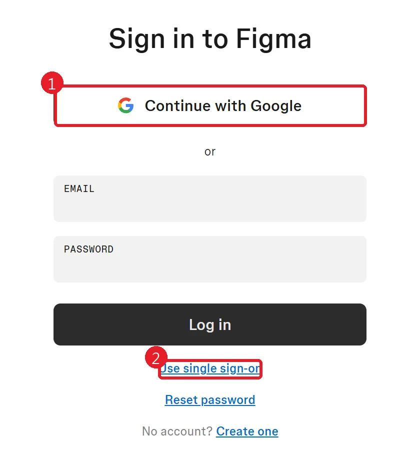
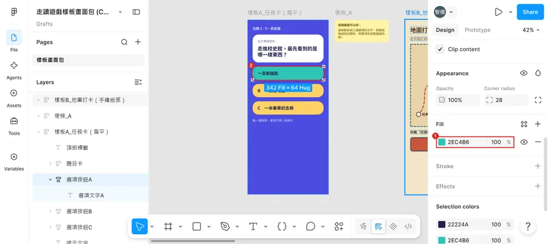
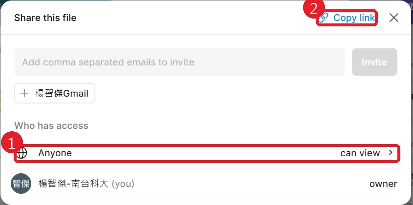

所有週次 · 文化遊戲松實作 · W11（Figma 三週中的第 1 週）
把你的遊戲點子，排成一頁單頁企劃
最後更新：2026-11-18 09:25
這週要做：從 12 個樣板（老師做好、可玩可改的遊戲範本）挑 1 個當起點，在 Figma 排出一頁單頁企劃，放 3 個遊戲畫面。
怎麼交：今天先做問卷（截圖交 W11-1，11/18 23:30 前）；Figma 單頁企劃連結＋ AI 助教結果卡交 W11-2，11/25（三）09:10 截止。
3 個畫面＋一句話說你的遊戲＋一個台南的東西，就完成了。
做完的樣子：別人只看這一頁就看得懂；能點的互動版，下週再用 Google AI Studio 做。
做完長這樣（點圖可以放大）

問卷課程自我檢核問卷（約 4 分鐘）
約 4 分鐘，今天填一次就好。
填完會出現一張「問卷完成卡」（上面有完成碼）。把它截圖，交到 flipclass 的「W11-1」（成績佔 3%）。
六步做完這一份
1玩 2 個樣板，挑 1 個當起點約 25 分鐘
每張卡按「▶ 試玩」玩一玩（括號裡是這個樣板的示範遊戲名）。
完成的樣子：你說得出「我想用這個當起點，因為＿＿」。
2把那個樣板的 Figma 複製到自己帳號約 10 分鐘
按那張卡的「🎨 Figma 檔」（老師做好的範本，可以複製成自己的），用學校信箱登入 Figma，按檔名旁的 ▾ →「Duplicate to your drafts」（複製到我的草稿）。
完成的樣子：檔名改成你的編號。
操作圖解：登入與複製



不小心點到「Move to trash」（移到垃圾桶）：到 Figma 首頁左邊的「Trash」（垃圾桶）還原。
3從「03 模組庫」挑 2–3 塊，做出 3 個畫面約 30 分鐘
到「03 模組庫」（Figma 檔裡放現成模組的那一頁）挑 2–3 個模組（每個有編號，例如 M6-02，跟 AI 助教說話時可以用編號），複製（Ctrl＋C），貼到「02 遊戲介面」（Ctrl＋V），做出 3 個畫面。貼上之後，拖到你要的位置；拖角落可以縮小。只用模組庫的模組組合也可以。
完成的樣子：3 個畫面都有東西，看得出在玩什麼。
看 29 秒示範：貼積木
看 29 秒示範：改字與顏色
操作圖解：怎麼拼、Figma 操作
不知道從哪裡開始：挑一張 P1「一句話」、兩張 C 台南卡、一個 M 玩法，改幾個字就是你的點子。改文字：對文字連點兩下，出現閃爍的游標就能打字，Ctrl＋A 全選，輸入新字，Esc 離開；改錯按 Ctrl＋Z。改顏色：點方框，點右邊的填色色塊，挑一個新的顏色。


4排成「01 單頁企劃」約 20 分鐘
到「01 單頁企劃」，把 3 個畫面和幾張卡排成一頁，版面自由。貼上之後，拖到你要的位置；拖角落可以縮小。
完成的樣子：別人只看這一頁、不聽你講，看得懂。
看 50 秒示範：排成一頁
操作圖解：好的單頁企劃
- 一頁看得完。
- 最好玩的那個畫面放最大。
- 用圖說話，少用字。
參考：Stone Librande（遊戲設計師）把整款遊戲畫在一張紙上的做法。
5找右下角的 AI 助教聊你的點子約 15 分鐘
① 點右下角的「問AI助教」。② 從「你的遊戲裡最好玩的那一刻是什麼？」聊起，至少聊 3 輪（你說一次、AI 助教回一次＝1 輪）。③ 聊夠了，AI 助教會把你的話整理成一句，按「對，就這樣」。④ 畫面出現「助教結果卡」，截圖留著，交到 flipclass 的 W11-2。AI 助教不打分數，但討論會被評分（佔 W11-2 這份作業的 50%），老師會讀。
完成的樣子：畫面出現「助教結果卡」。
6分享連結、交件約 5 分鐘
在 Figma 按右上角的「Share」（分享），把存取設成「Anyone」（任何人）、「can view」（可檢視），再按「Copy link」（複製連結），用無痕視窗貼上試一次。到 flipclass 的 W11-2 貼上連結，再附助教結果卡截圖。
完成的樣子：連結打得開，兩樣都交了；打不開視同未繳交。
操作圖解：分享

卡住了：常見的卡住與解法
- 找不到複製的選項
- 先登入 Figma（沒登入只能看）。點檔名旁的 ▾，選「Duplicate to your drafts」（複製到我的草稿）；看不到這一項，就舉手問老師。
- 文字改不了
- 對文字連點兩下，出現閃爍的游標就能打字。
- Share 裡看不到 Anyone
- 在 Share 視窗找存取設定（預設只有你自己），點開改成「Anyone」（任何人），右邊選「can view」（可檢視）。
- 不知道挑哪一個樣板
- 挑你最想拿來改的。想不出來就挑卡牌或解謎，畫面最單純。
- 在手機上
- Figma 手機網頁只能看，不能複製、改字。步驟 2 到 6 要用電腦做。請用教室電腦，或借同學的電腦。
想多拿分：讀一份小封神參考（自願，加分，不扣分）
到 flipclass 的「教材」，打開「小封神參考資料」。挑一段放進你的遊戲，在交 W11-2 時的留言寫明原著哪裡、你改了什麼，這份作業最多再加 5%。沒讀完全不扣分。
想拿更多加分：申請 Figma 教育版（免費，選做）
做完後回答這份作業你花了多少腦力？
你覺得這份作業花了多少腦力？ 1＝非常少，9＝非常多
帶筆電的進階任務（自願，加分，不扣分）
沒帶筆電、或只用手機和教室電腦的同學，可以直接略過這一塊，上面的主線一樣能完成。每週的進階任務只有一件，做不做都不影響你的主線作業。
這週的任務：把樣板放到自己的電腦上，改一個字，看它馬上變。
為什麼值得多做：在自己的電腦上改，存檔、重新整理，一兩秒就看到結果，不用等任何線上工具。後面幾週你會一直需要這樣「改一點、馬上看」。教室電腦重開機會清空，所以這件事要用自己的電腦。
- 下載樣板資料夾。老師會在課堂上給你所選樣板的下載連結，下載後解壓縮到桌面。
- 雙擊 HTML 檔。它會用瀏覽器打開，不用上網也能玩。先玩一下。
- 用記事本打開同一個資料夾裡的 JSON 檔（存放遊戲文字的檔案，檔名結尾是 .json）。找到一個人物或地點的名字，改成你想要的字。注意不要刪掉前後的引號與逗號。
- 存檔，回到瀏覽器按重新整理。看到你改的字就成功了。
卡住了：頁面出現紅字或打不開，通常是改到了引號或逗號。按 Ctrl＋Z 還原，再改一次；還是不行，把樣板資料夾重新解壓縮一份，從頭來。
下週的進階任務：把 AI Studio 做好的版本存回你的電腦。
進階：一次換掉整份檔的顏色（需要教育版）
Figma 樣板的顏色都從同一份名單來，改名單裡的一個顏色，整份檔跟著變。想試這個，可以先去申請 Figma 教育版（加分作業）。
看 57 秒示範：一次換掉整份檔的顏色